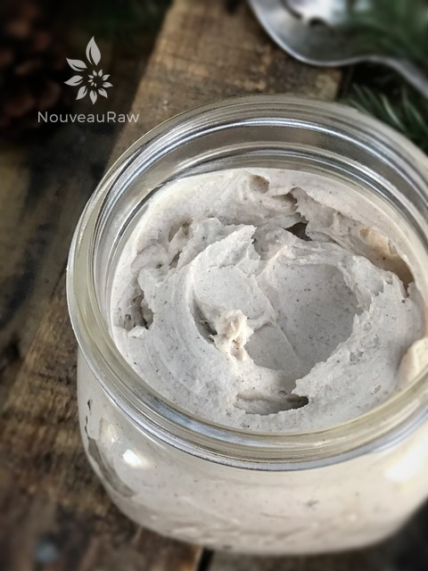

Pumpkin Spiced Ginger Frosting

~ raw, vegan, gluten-free ~
Pumpkin Spiced Ginger Frosting will melt in your mouth as you swirl the velvety texture around on your tongue. Seasoned with the taste of Autumn… it is the perfect way to usher in the cooler months to come. This semi-sweet frosting is perfectly balanced with the gentle heat of ginger.
Ginger is a warming spice for the body. So for those of you who eat a high raw diet in the colder months of the year, learn to use the right spices to warm yourself up from the inside out.
It stokes the digestive fire. It also improves the assimilation and transportation of nutrients to targeted body tissues and clears the microcirculatory channels of the body.
It comes in two forms, dried and fresh. Though they are technically the same thing, the two are assimilated differently into the body. Fresh ginger is used for digestion and nausea, while powder ginger is used for colds and respiratory illnesses. Dried ginger is also hotter than fresh ginger.
For this recipe, I recommend that you stick with dried ginger. Both fresh and dried ginger are used in savory dishes, but dried ginger is typically for in sweet dishes.
I hope you enjoy this frosting. Blessings, amie sue
Ingredients:
Yields 5 cups
- 2 cups cashews, soaked 2+ hours
- 1 3/4 cups thick coconut milk, fresh or canned
- 1/3 cup light raw agave or maple syrup
- 1/4 tsp liquid NuNaturals stevia
- 1/2 tsp vanilla bean paste
- 2 Tbsp pumpkin spice
- 1 tsp dried ginger
- 1/8 tsp Himalayan pink salt
- 1 cup coconut oil, melted
- 2 Tbsp lecithin powder or liquid
Preparation:
- After soaking the cashews, drain and rinse them well. Set aside.
- In a high-speed blender combine in order; cashews, coconut milk, maple syrup, stevia, vanilla, pumpkin spice, ginger, and salt.
- By placing the liquids in first, it helps the blades spin more easily.
- Blend until creamy and don’t feel any grit in the frosting.
- Depending on the blender, this may take anywhere from 1-5 minutes.
- If you use maple syrup, it will create a cream-colored frosting rather than white.
- While the blender is running and a vortex is in motion, drizzle in the coconut oil. Make sure that it gets well incorporated.
- Now add the lecithin and process just until mixed in.
- Place the frosting in an airtight container and place in the freezer for 2-4 hours to firm. Keep checking the consistency based on how you plan on using the frosting.
- This will keep for 3-5 days in the fridge and will freeze for 1-3 months.
Additional Cake Tips:
- How to frost a cake. Click here.
- How to slice a cake. Click here.
- How much frosting is needed for a cake? Click here.

© AmieSue.com